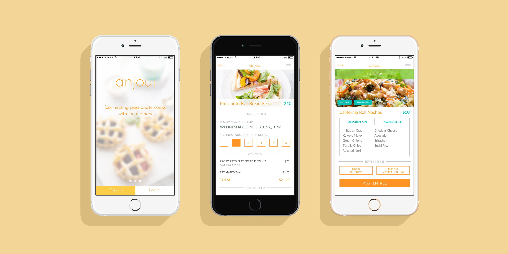

Anjoui
Anjoui is a peer-to-peer mobile marketplace, connecting home cooks with local diners. My partner and I were brought on during early stage development to provide user experience and interaction design direction for the mobile application. Anjoui was founded on the principles of economy sharing and centered around the assumption that people enjoy affordable, homemade, healthy meals.
-
Role
UX Researcher, Interaction Designer
-
Deliverables
Heuristic Evaluation, Competitive Analysis, Wireframes, Prototype, Usability Testing
-
Client
Anjoui
Research
We initiated the project by conducting competitive analysis to better understand Anjoui’s position in the marketplace, and research how complementary applications, such as AirBnB and Chase QuickPay gained users’ trust.
Once we validated the target user base, we created a research plan and conducted 6 qualitative interviews to learn more about the in-home food preparation process and discover the motivations of potential diners. We loved asking consumers, “What does ‘home cooked’ mean to you?”
Keeping the user at the center of our research, we also ran a heuristic evaluation of our client’s preliminary wireframes to identify pain-points and opportunities for improvement.
Heuristic Evaluation of Preliminary Wireframes
User Experience
We learned that home cooks are motivated by recognition, more than compensation, and that diners seek meals on-demand, rather than days in advance. We used an application map to define the functional requirements to satisfy the users’ needs and desires.
I created an application map to provide a holistic view of the top-level navigation and content hierarchy.
Our goal was to design a mobile application for two unique sets of users, while eliciting a feeling of trust. We created 40 wireframes to document the layout and content of each screen and annotated the interactions across the cook and diner workflows.
Prototype & Test
Following an agile approach, we developed a prototype and incorporated feedback through a series of usability tests. It was incredibly valuable to observe potential home cooks posting meals and diners browsing for meals on the Anjoui mobile prototype, so we could pinpoint how to improve their experience.
Results
The Anjoui founders were able to interact with their concept for the first time by navigating through our mid-fidelity prototype. Our design was approved, and we then collaborated with visual designers who created key screen templates of the user interface based on our wireframes.
UI Design by Amy Ton
